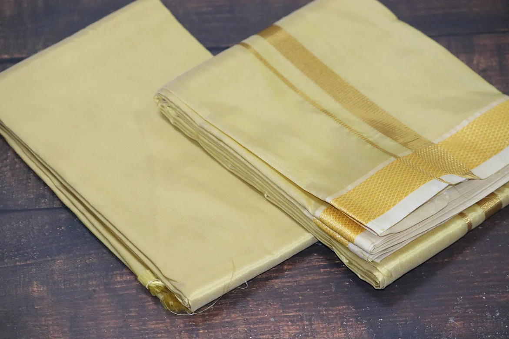

dhoti
The dhoti is a traditional garment worn by men in India, embodying simplicity, elegance, and cultural significance. This piece of clothing, made from a rectangular piece of cloth, typically measures about 4 to 6 yards in length. It is wrapped around the waist and legs in a manner that is both functional and symbolic, reflecting the wearer's heritage and the cultural values of modesty and dignity. The dhoti is traditionally white or cream in color, symbolizing purity, but it can also be found in other colors and designs, depending on the region and the occasion. The cloth is usually made from cotton, making it comfortable to wear in the hot and humid climate of many parts of India. Silk dhotis are also popular, especially for ceremonial occasions like weddings, religious rituals, and festivals. Wearing a dhoti involves a specific technique of wrapping and tucking, which varies across different regions of India. In some parts of the country, the dhoti is worn with a pleat in the front, while in others, the pleat is positioned to one side. The garment is often paired with a kurta, an upper garment that complements the dhoti, creating a complete traditional ensemble. The dhoti holds deep cultural and religious significance. It is commonly worn by priests and devotees during religious ceremonies and rituals, symbolizing a connection to ancient traditions and spirituality. In many Indian communities, the dhoti is also a symbol of respect and honor, worn during important life events such as weddings and festivals. In addition to its cultural importance, the dhoti has also been a symbol of Indian identity and resistance during the struggle for independence. Mahatma Gandhi, the leader of the Indian independence movement, often wore a dhoti as a symbol of simplicity and self-reliance, encouraging others to embrace indigenous clothing and reject British imports. Today, while modern clothing has become more prevalent, the dhoti remains a cherished garment, especially during traditional events and ceremonies. It is a timeless piece of clothing that continues to be an integral part of Indian culture, representing the enduring values of simplicity, tradition, and respect for heritage.